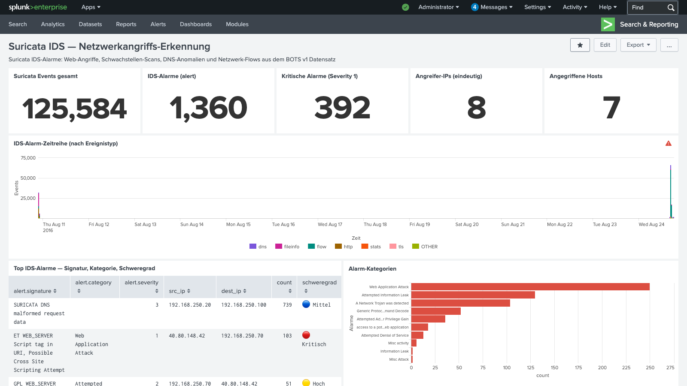

Kontext
Im BOTS v1 Datensatz (Boss of the SOC, August 2016) überwacht ein
Suricata IDS-System das Netzwerk von Wayne Enterprises.
Parallel zum Cerber-Ransomware-Angriff läuft ein umfangreicher
Web-Applikationsangriff gegen den Webserver 192.168.250.70.
Suricata liefert dabei eine völlig andere Perspektive als FortiGate oder Windows-Event-Logs: Es analysiert den Netzwerkverkehr in Echtzeit und vergleicht ihn mit bekannten Angriffssignaturen (Ruleset: Emerging Threats + GPL).
Was ist Suricata? Suricata ist ein Open-Source-Network-IDS/IPS (Intrusion Detection/Prevention System). Es analysiert Netzwerkpakete in Echtzeit, erkennt bekannte Angriffsmuster anhand von Signaturen und protokolliert Alarme mit Quell-IP, Ziel-IP, Protokoll und Schweregrad.
Datenlage: Event-Typen
Der BOTS v1 Datensatz enthält 125.584 Suricata-Events verschiedener Typen:
| Event-Typ | Anzahl | Beschreibung |
|---|---|---|
| flow | 80.241 | Verbindungsflüsse (TCP/UDP-Sessions) |
| fileinfo | 18.941 | Dateiübertragungen im Netzwerk |
| http | 14.341 | HTTP-Anfragen mit Header-Details |
| dns | 7.522 | DNS-Anfragen und Antworten |
| tls | 1.746 | TLS-Verbindungen (HTTPS) |
| alert | 1.360 | IDS-Alarme (Angriffserkennung) |
| ssh | 2 | SSH-Verbindungen |
Die IDS-Alarme
Die 1.360 IDS-Alarme stammen aus zwei Hauptquellen:
- Web-Angriffe von 40.80.148.42 → gegen den Webserver
192.168.250.70 - DNS-Anomalien von 192.168.250.20 → Cerber-Ransomware C2-Kommunikation

Abb. 1 — Suricata IDS Dashboard: 125.584 Events, 1.360 Alarme, 392 kritische (Severity 1) — Web Application Attack dominiert die Alarm-Kategorien
Erkenntnisse
1. DNS-Anomalien — Cerber C2-Kommunikation
Mit 741 Alarmen ist SURICATA DNS malformed request data
die häufigste Signatur. Quell-IP 192.168.250.20 sendet fehlerhafte
DNS-Anfragen an 192.168.250.100.
Warum ist das bedeutsam? Cerber-Ransomware nutzt DNS-basierte C2-Kommunikation — es sendet verschlüsselte Daten über DNS-Anfragen an seinen Command-and-Control-Server. Fehlerhafte DNS-Pakete sind ein klassisches Indiz für DNS-Tunneling oder C2-Traffic.
C2-Indikator: 741 fehlerhafte DNS-Anfragen von
192.168.250.20 (dem infizierten Host) bestätigen die
Cerber-C2-Kommunikation. In Kombination mit dem SMB-Lateral-Movement
ergibt sich ein vollständiges Bild der Angriffskette.
2. Acunetix Web-Schwachstellen-Scanner
Die externe IP 40.80.148.42 wird von Suricata direkt als
Acunetix Version 6 (Free Edition) identifiziert — ein automatischer
Web-Schwachstellen-Scanner. Er sendet 45 Scan-Anfragen an den Webserver
192.168.250.70.
| Signatur | Kategorie | Severity | Count |
|---|---|---|---|
| ET WEB_SERVER Script tag in URI — XSS | Web Application Attack | 🔴 1 | 103 |
| ET WEB_SERVER Onmouseover= in URI — XSS | Web Application Attack | 🔴 1 | 48 |
| ET SCAN Acunetix Version 6 Detected | Attempted Information Leak | 🟡 2 | 45 |
| ET WEB_SERVER Possible XXE SYSTEM ENTITY | A Network Trojan was detected | 🔴 1 | 41 |
| ET WEB_SERVER SQL Injection SELECT FROM | Web Application Attack | 🔴 1 | 33 |
| ET WEB_SERVER SQL Injection Sleep Delay | Web Application Attack | 🔴 1 | 32 |
| ET WEB_SERVER CVE-2014-6271 (Shellshock) | Attempted Admin Privilege Gain | 🔴 1 | 18 |
3. Shellshock (CVE-2014-6271)
18 Alarme für ET WEB_SERVER Possible CVE-2014-6271 Attempt
zeigen, dass der Angreifer die berühmte Shellshock-Schwachstelle ausnutzen wollte.
Shellshock erlaubt Remote Code Execution durch speziell konstruierte HTTP-Header
(User-Agent, Referer) gegen Bash-Instanzen hinter CGI-Skripten.
Shellshock-Mechanismus: Ein HTTP-Request mit dem Header
() { :; }; /bin/bash -c 'whoami' würde auf ungepatchten Systemen
beliebige Befehle als Webserver-Prozess ausführen. Suricata erkennt dieses Muster
an der charakteristischen Zeichenfolge im HTTP-Header.
4. XXE — XML External Entity Injection
41 XXE-Versuche (ET WEB_SERVER Possible XXE SYSTEM ENTITY in POST BODY)
zeigen den Versuch, interne Dateien des Webservers über eine XML-Verarbeitung
auszulesen. Ein erfolgreicher XXE-Angriff könnte /etc/passwd oder
AWS-Credentials leaken.
SPL-Queries
Die Attack-Chain im Überblick
Kombiniert mit den anderen Analyse-Schichten ergibt sich folgendes Bild:
- Reconnaissance: Acunetix-Scanner (
40.80.148.42) kartiert den Webserver192.168.250.70 - Web-Angriffe: XSS, SQLi, XXE, Shellshock-Versuche gegen den Webserver
- Initial Access: Cerber-Dropper gelangt auf
192.168.250.100 - C2-Kommunikation: DNS-Anomalien von
192.168.250.20→ Suricata schlägt Alarm - Lateral Movement: SMB-Verbindung 250.100 → 250.20 (39.204 Events)
- Persistence: Registry-Run-Keys mit
osk.exeMasquerading - Impact: Datei-Verschlüsselung auf
192.168.250.20
Defensive Maßnahmen
Fazit
Die Suricata-Analyse zeigt, wie ein Netzwerk-IDS mehrere parallele Angriffsvektoren gleichzeitig sichtbar macht:
- Tool-Erkennung: Acunetix wird direkt identifiziert — keine manuelle Analyse nötig
- Multi-Vektor-Sicht: XSS, SQLi, XXE und Shellshock in einem einzigen Log-Stream
- C2-Erkennung: DNS-Anomalien von 192.168.250.20 korrelieren mit dem Cerber-Befall
- Signaturdichte: 1.360 Alarme auf 125.584 Events — 1,1% Alarm-Rate
Weiterführend: Suricata-Alarme lassen sich mit Sysmon-Events (Process Creation auf dem Zielsystem) und Registry-Logs (Persistence) korrelieren, um eine vollständige Kill-Chain-Analyse zu erstellen.